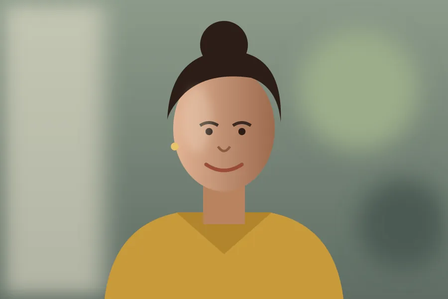
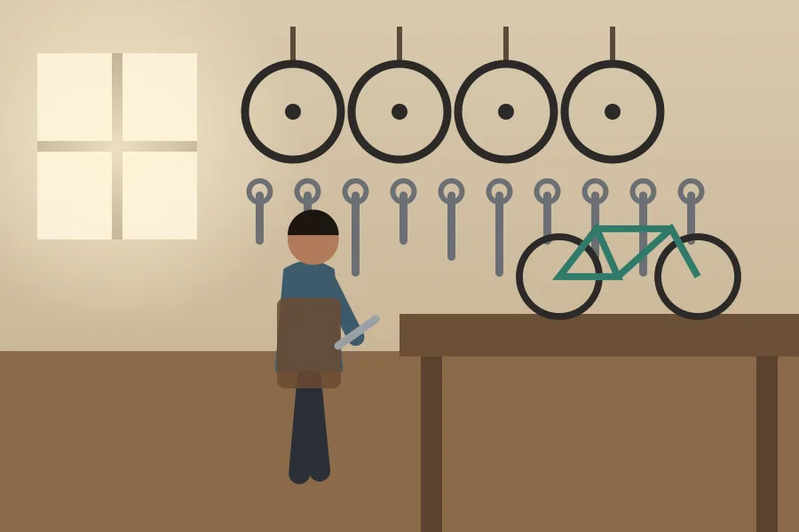
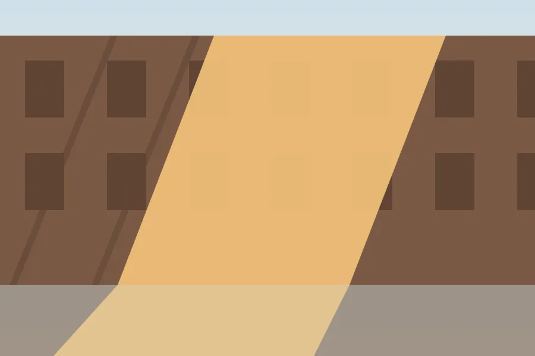
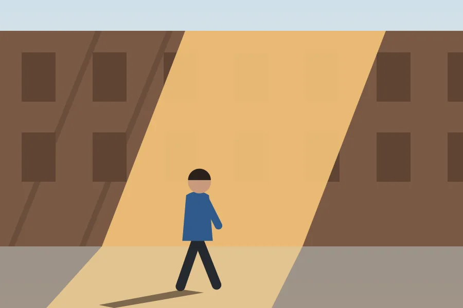

Pictures of people are the ones most of us care about most, and the ones that are hardest to get right. The camera is the easy part. The person in front of it is the real subject, with moods and rights of their own. Good people pictures come from a little technique and a lot of attention to the person.
Portraits


Talk before you shoot, and keep talking while you do. Most people are nervous in front of a camera, and silence makes it worse. Give small, clear directions. Turn your shoulders a little away from me. Chin forward and slightly down. Weight on your back foot. Relax your hands, or give them something to do, like holding a cup. And keep shooting between the poses, because the laugh after “one more” is often the best frame.
Focus on the eye nearest the camera (chapter 9). A slightly longer lens, around 85 to 135 mm, flatters faces because you stand further back (chapter 13). Soft light from a window or open shade is kinder than direct sun. Make sure the background is calm, or blur it with a wide aperture.
Environmental portraits
An environmental portrait shows someone in their own world, at work or at home. The place tells as much of the story as the face does. Use a wider lens, around 35 mm, and include their tools or the room around them. Ask them to carry on with what they’re doing and wait for a natural moment, then ask them to look up for one or two frames.
Street photography


Street photography is about everyday life in public places, caught as it happens. Be open about it rather than sneaky. People react far better to someone who smiles and nods than to someone hiding behind a long lens. A wide or normal lens and a little courage to get close work best.
Many street photographers find the stage first and wait for the actor. Look for good light or an interesting wall, frame it and wait until someone walks into the right spot. Zone focusing helps. Set manual focus to about three metres at f/8 and everything from roughly two to five metres stays sharp, so you can shoot the instant something happens.
Asking strangers
Asking a stranger for a portrait is scary the first time and gets easier fast. Say briefly why you’d like the picture. “The colour of your coat against this wall is great” works better than “can I take your photo?”. Accept a no with a smile. If they say yes, take a few frames, show them the best one and offer to send it. Many people are pleased to be asked.
People and the law in Germany
This is general information, not legal advice. In Germany everyone has a right to their own image. Taking a picture of someone in a public place is generally allowed. Publishing it, online or in an exhibition, usually needs their consent. There are exceptions, for example when people appear only as a small part of a scene or a landscape, or as part of a crowd at a public event. Even then, a picture mustn’t harm the legitimate interests of the people in it.
Some pictures are off limits altogether. Photographing people inside their homes or other private, shielded spaces without permission is a criminal offence, and so is photographing people in a helpless situation, such as the victims of an accident. Be extra careful with children and always ask their parents. For portraits you plan to show, get permission, ideally in writing. A short model release that says where the picture will appear is enough for most club uses.
Exercises
Exercises U1–U4. Tick each one off when you’ve tried it. Your ticks stay on this phone or computer.
- U1
Window portrait
Photograph a friend beside a window, with the light from one side. Use a focal length of 85 mm or longer and focus on the nearest eye.
- U2
In their world
Make an environmental portrait of someone at work or at their hobby. Use a wider lens and include the tools they use.
- U3
Ask a stranger
Ask one stranger for a portrait this week. Say why you’d like it, show them the result and offer to send it.
- U4
Find the stage
Find a patch of good light on a busy street, frame it and wait twenty minutes for people to walk into it.
Photography Handbook, © 2026 Samskara Photo Club. Text and illustrations are licensed under CC BY-NC-SA 4.0. You may share and adapt them for non-commercial use if you credit the club and share your version under the same licence. Commercial use needs the club’s permission. The club logo is not covered by the licence.